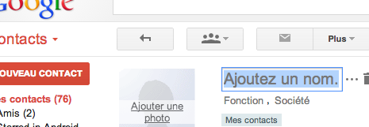
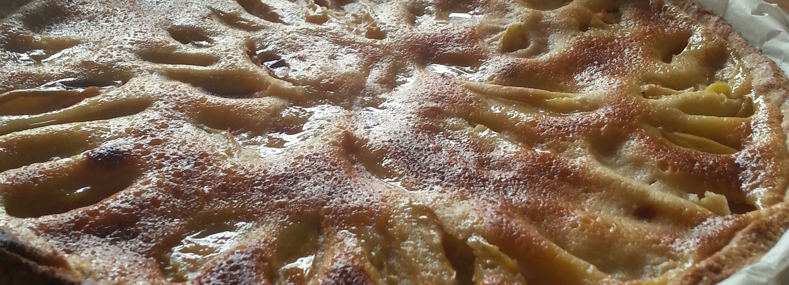

Yeoman !
A l'heure des applications single page, il est parfois fastidieux de commencer un projet front end vu le nombre de dépendances que celui-ci demande: Bootstrap, jQuery, AngularJS ... De plus chacun de ces éléments évolue et il faut mettre à jour leur repo, vérifier que ce soit toujours compatible en faisant des tests, revenir à la précédente car vous préferiez le bandeau rose flashy qui apparaissait quand vous posiez votre souris sur un element spécifique. Tout plein de petits trucs qui sont parfois bien difficiles à gérer et à se souvenir.
Bien heureusement, une petite équipe de quelques gars bossant chez Google et d'autres ont crée Yeoman (dont un type qui mange des noix). Yeoman est un script permettant de générer un projet front-end rapidement et de le maintenir. Il s'appuit sur trois outils. Yo pour la gestion du generateur de projet (c'est à dire que vous pouvez créer un projet pour AngularJS, BackboneJS, EmberJS, ...). Bower permet, quand à lui de gerer l'installation et la mise à jour de paquet (jQuery, Bootstrap, ...). Enfin, Grunt permet de réaliser divers tests sur votre projet jusqu'à sa compilation en production.
Voici quelques lignes de commande pour démarrer ton projet avec le générateur AngularJS :
###### on cree le dossier et on se deplace dedans
mkdir test1
cd test1
###### installation de yo, bower et grunt
npm install -g yo
###### installation du générateur
npm install -g generator-angular
###### instance du projet
yo angular
###### crée une route, un controlleur et la vue associée
yo angular:route login
###### lancement de ton application
grunt server
Je te renvoie au site pour la documentation et l'installation de Yeoman. Il te faudra un serveur NodeJS pour l'installer. Et voici le générateur AngularJS; bien d'autres sont disponibles
Pâtes à la Carbonara

"Pff tu vas rien m'apprendre, je fais des pâtes carbo depuis que ma mère me laisse cuisiner". C'est ce que tu te dis, et tu as tort. Dans ton studio d'étudiant tu draguais déja avec ce plat, la miss n'osait pas te dire que c'etait ... dégueux, trop gras, tu ajoutais de la crème fraîche, des lardons en plastique et sortais des pâtes trop cuites. À la fin tu as eu a peine un béco et tu n'as pas compris ... Moi je vais te dire pourquoi, car tu étais un noob. Oui c'est vrai, mais maintenant tu veux reprendre les choses en main, ré-inviter cette demoiselle et re-tenter ta chance !
Avant toute chose il faut connaître l'origine de cette recette pour mieux la comprendre, mieux la réaliser. Cette recette est d'origine italienne. Les mamas romaines cuisinaient ce plat aux mineurs pour qu'ils survivent a la durete de leur métier. "Carbonara", "Carbo", "Carbone", pour la couleur noir que donnera le poivre sur ton plat et qui rappelera le charbon (carbone).
- 1 oeuf par personne + 1 pour le plat (si vous êtes deux ça fait donc trois oeufs)
- de la joue de porc (pas des lardons, t'es plus un noob) ou du speck
- du poivre gris
- du gros sel
- 200gr de spaghetti par personne de marque italienne de préference
- 1 gros morceau de parmigiano
Dans une gros récipient, faire bouillir de l'eau. Lorsque celle-ci boue, lance une grosse poignée de sel dedans et une dans ton dos (ça porte chance et ça fait chier ta meuf qui te bouche l'évier / la douche avec ses cheveux). Place délicatement tes spaghetti dans l'eau et laisse les cuir 1 min de moins que ce qui est indiqué sur ton paquet.
Pendant ce temps, lance Super Meat Boy, non surtout pas. Coupe en grossier morceaux la joue de porc que tu auras acheté chez ton boucher; oai prends le temps d'aller chez lui, ses tarifs sont généralement compétitif à ceux de Carrefour / Leclerc / Casino et à force d'y aller il t'offrira de la bidoche ! De plus ça te fait connaître / travailler ton quartier et ça fait bien chier les vieux de voir des jeunes prendre soin d'eux. Fais revenir la joue de porc dans une poele en veillant à ce qu'elle ne brûle pas.
Dans un BOULE mélange vigoureusement (la branlette ça sert) les jaunes d'oeufs avec trois pincées de poivres. Il faut que ta composition mousse. Rajoute deux cuillers à soupe du bouillon venant de l'eau de tes pâtes pour rendre le plat moins sec.
Une fois tes pâtes cuites, égoutte-les et déverse le contenu de ton BOULE. Dresses méticuleusement ton assiette (creuse) avec une grosse poignée de pâte et répartis les morceaux de viande. Par dessus, râpes du parmesan et sers tes assiettes.
Régales toi !
Input like Gmail contact

Je travaille actuellement sur la réalisation d'une fiche de contact. Je dois la mettre au goût du jour. Comme nous avons dernièrement choisi d'utiliser AngularJS, j'ai donc la joie de pouvoir l'utiliser. Étant très attentif à ce que propose Google en front-end, je me suis attelé à réaliser les mêmes interactions que leur fiche de contact au niveau des champs d'entrée.
C'est à dire:
- Un affichage de la valeur du champ par défaut
- Un placeholder si la valeur du champ est vide
- Montrer l'édition au survol du champ
- Au focus sur le champ, afficher l'édition
- Au blur sur le champ, sauvegarder sa valeur (AJAX)
- Un ENTER dans le champ, sauvegarde également la valeur
- Un tab donne le focus vers le champ suivant
Et voici ma solution:
Valeur actuelle: {{a6.value}}
Valeur sauvegardée: {{a6.save}}
Les interactions sont gérées par le JS ou l'HTML5. La visualisation de l'état se fait via le border qui change de style. Je n'ai pas ajouté de directive pour le placeholder car je ne prône pas la compatibilité des anciens navigateurs (vous pouvez trouver cette directive sur mon compte Gist).
Je pense que ce genre de solution répond aux attentes des formulaires de plus en plus simples que l'on voit apparaître avec le support de plusieurs terminaux, l'essort d'HTML5 et la multiplication de requêtes AJAX. Au niveau backend, les choses se compliquent si vous n'utilisez pas un framework pur MVC. Pour simplifier la sauvegarde de votre formulaire à multi-champ, vous pouvez savegarder toutes les entrées contenues dedans au lieu de faire du cas par cas.
Tarte aux mirabelles

C'est la saison et donc il faut en profiter. Apres avoir tafé une bonne semaine il faut savoir se ressourcer. Quoi de mieux qu'une bonne tarte ? En plus une tarte aux mirabelles. La recette est simple mais comptes sur moi pour la rendre compliquée.
Ingrédients pour la pâte à tarte
- 250 g de farine
- 125 g de sucre semoule
- 1 oeuf
- 100g de beurre
- 1 zeste de citron
- 1 pincée de sel
Dans un BOULE, délayez l'oeuf avec le sucre en poudre et une pincée de sel. Mettez la farine sur le plan de travail, faites un puits au centre, versez-y le contenu du bol et le zeste de citron. Versez le beurre mou. Malaxez le tout jusqu'à obtenir une pâte homogène. Étalez-là au rouleau sur une feuille de papier cuisson. Ajoutez également une feuille de papier cuisson au dessus de la pâte, pour garantir qu'elle ne brûle pas. Faites cuire à four chaud 15 mn la pâte dans le BOULE.
Ingrédients pour que ce soit meilleur qu'une simple pâte
- 2 cuillers à soupe de farine
- 150g de sucre
- 2 oeufs
- 4 grosses mirabelles que t'auras acheté sur le marche de ton village et oai faut se bouger le boule le week end
Découper de maniere régulière vos mirabelles et les disposer sur la pate précuite de maniere esthétique. Dans un BOULE, mélanger deux oeufs, 150g de sucre et deux cuillers à soupe de farine. Versez la préparation sur la futur tarte. Testez si le four est bien chaud en touchant l'intérieur avec votre main. Enfournez et surveillez pendant 30min (ce qui équivaut à une partie de ladder SC2, 6 pool interdit).
Régales toi !
Ractive.js : Alternative à AngularJS
Quelqu'un a osé ? Concurrencer Google sur son propre terrain ! Mais bien sûr et il existe plusieurs MVC Javascript bien connus apparus bien avant. BackboneJS par exemple ou encore le rongeur EmberJS. Dans cet article je ne souhaite pas vous présenter ces frameworks mais une librairie qui permet de manipuler le DOM autrement, comme le fais AngularJS.
Dès le depart HTML n'a jamais été conçu pour créer des applications Web dynamiques. Des librairies tel que jQuery ou PrototypeJS ont grandement facilitées l'utilisation de Javascript pour rendre vos pages cool. Il est alors facile de recuperer un element de votre page en JS et lui ajouter toute sorte d'event / function / boule a facette ... La librairie que je souhaite vous presenter permet de garder une relation / liaison forte entre votre code Javascript et la structure HTML. Ce dernier devient alors un modèle pour votre application.
Rien de mieux qu'un "Bye World" pour commencer (oai j'essaye d'innover pour pas te perdre)
Dans cet exemple, Ractive.js construit une representation parallele du DOM ou la valeur {{code}} de la structure HTML est donne par le JS via les parametres de l'objet ractive. Ainsi si cette valeur change, elle est modifie cote JS et HTML. Plus besoin d'ecouter votre element, ractive gere cette partie pour vous.
Pour ceux qui connaissent AngularJS, ce genre de manipulation leur parait tres familiaire, notament avec les liasons que vous pouvez creer avec $scope.VOTRE_VARIABLE. Cette librairie va au plus simple, pas besoin de rajouter des attributs specifiques dans vos elements, ni d'injections et dependance. Contrairement au framework de Google, Ractive.js peut etre parfaitement maitrise en une journee. Plusieurs didacticiels interactifs sont a votre disposition et meme un tuto de 60 secondes.
Pour conclure, je pense que ractive.js est interessant a partir du moment ou vous ne voulez pas integrer un gros framework JS et que vous souhaitez facilement interagir avec votre DOM sans taper d'innombrable lignes code. Il se maitrise tres vite; encore plus vite pour les Angular fanboy.
A venir une todolist
Quelques directives Angular
Depuis quelques mois, j'ai la chance de travailler avec un framework JS que je trouve formidable. Il se nomme AngularJS. Je ne vais pas vous le présenter car bien d'autres sites l'ont déja fait. Si vous ne le connaissez pas encore je vous conseille vivement d'aller taper quelques lignes de code avec ce framework avant de lire la suite de cet article. Comme ça apres, "t'es chaud" !
Ce que je souhaite partager, ce sont les directives. Une directive est un attribut, d'un élément HTML, qui lui octroi des fonctionnalités supplémentaires : tel que lancer une action quand on clique sur celui-ci ou encore, répéter cet element autant de fois qu'il y a d'objet dans un tableau associé. AngularJS fourni déja un ensemble de directives pour effectuer la plupart des actions / interactions. Il s'enrichie au fur et à mesure des versions. Malgré ce packetage, il faut parfois en écrire soi-même. Et comme ce besoin peut être récurrent à travers vos projets, il est intéressant de se créer une boite à directives.
Voici celles que j'utilise régulièrement :
Si vous souhaitez en ajouter d'autres, faîtes des pull request sur ce projet. J'enrichirai cet article par la suite.
Ma configuration pour Sublime Text
Petit déja tu aimais l'informatique (dans une cave), tu jouais aux jeux videos avec tes potes et tu essayais de comprendre quelques lignes de codes. Maintenant tu les comprends ces lignes, tu as grandis dans cet univers. C'est bien. Tu as debuté en éditant tes premiers fichiers avec vim, gedit ou encore notepad. Puis sont apparus des IDE avancés tel que : Eclispe, Netbeans ou encore Aptana. Tu y a goûté, mais au fur et à mesure de son utilisation, tu sentais que quelque chose t'échappais. Tu te sentais frustré, faible pour avoir suivi les conseils d'un collègue binoclar aux cheveux longs. Ce côté simple et limite que possedaient tes premiers editeurs. Tu as peut-être basculé sur Notepad++, par la suite, le trouvant à ton goût ou même, tu as compris que le développement n'étais pas fait pour toi et vends des calleçons / strings de couleur sur les marchés. Mais tout ça c'est fini !

Si tu ne le sais pas encore, nous sommes en 2013 et un éditeur de développement est sorti, il se nomme Sublime Text. Il a connu un engoûement aupres des développeurs avec la version 2. Cet éditeur de texte est codé en C++ / Python par Jon Skinner et il est disponible sous toutes les plateformes (Mac, Linux et Windows). Pour tout ce qui est de l'installation (Package Control et autres plugins kikoolol) je te laisse trouver celà sur les Internetz. Ce que je veux te présenter ici dans cet article, c'est ma configuration. Tu peux la copier dans ton fichier de configuration () et te la peter. Je te laisse le choix également du color_scheme même si j'apprécie actuellement l'excellent "Tomorrow".
{
"caret_style": "phase",
"detect_slow_plugins": false,
"draw_minimap_border": true,
"font_face": "Source Code Pro",
"font_size": 16,
"highlight_line": true,
"ignored_packages":
[
"Vintage"
],
"margin": 0,
"trim_trailing_white_space_on_save": true
}
Tu peux télécharger l'excellente police "Source Code Pro" ici : https://github.com/adobe/source-code-pro
Le color_scheme "Tomorrow" et le thème "Phoenix" sont disponibles via Package Control.
Sublime Text est sorti en version 3 mais tous les plugins n'ont pas encore été transférés dessus. Voici la liste de ceux disponibles.
Le BOLD, c'est la vie

Coder dans une cave a l'abri du soleil c'est bien mais il faut aussi savoir se ressourcer. Je ne compte pas te présenter la recette du riz au coca-cola ou autre malbouffe. Ici tu lis le blog de quelqu'un qui aime se faire chier, qui aime se prendre la tête et faire les choses bien. Donc comme premier essai je te présente ma recette Crêpe oignons champignons. Régales toi et impressionnes ta copine ou ta mère.
Ingrédients
- Huile d'olive
- Du vinaigre balsamic
- 2 gros oignons
- Un paquet de tortillas (par 8 en general, au pire ça t'en fera plus pour en emporter au boulot et te la péter devant tes collegues qui mangent leur barquette plastique Fleury Mich Mich)
- Des champignons frais (tu peux aller les chercher en forêt en suivant les vieux qui s'égarent dans les bois ou acheter une conserve; je privilégie la première solution sinon tu es pas un vrai !)
- Du gruyère rapé
- Du persil
- Le couple sel et poivre
- Une grosse salade verte (que tu n'auras pas acheté en sachet pour éviter que tes enfants soient roux, "Il faut créer des légendes pour éduquer la populace")
Avec 2 cuillerées à soupe d'huile d'olive faire fondre les oignons que tu auras précédement coupés en tout petit morceaux (fais toi chier, ça vaut le coup). Ajoutes une cuiller à café de sucre pour les faire carameliser pendant 3 min puis les réserver. Effectuer cette même étape avec les champignons.
Dans ta poêle IKEA, dispose une première tortilla et fais la revenir 1 min, puis ajoute ton mélange oignons / champignons. Parsèmes le tout de fromage rapé.
Les deux étapes précédentes sont à répéter autant de fois que tu as d'invité. Exemple : tu reçois tes parents dans ta cave, ça fait trois personnes (donc tu dois répéter encore deux fois les opérations précédentes).
Sers les croustillants aux oignons et champignons avec la salade que tu arroses généreusement de vinaigre balsamique et d'huile d'olive.
Pour montrer que tu n'es pas parfait à tes hôtes, tu peux rajouter au dernier moment des pignons de pains ou des éclats de noix (décortiquées) en disant : "Mince j'avais oublié ceci !"
Régales toi !